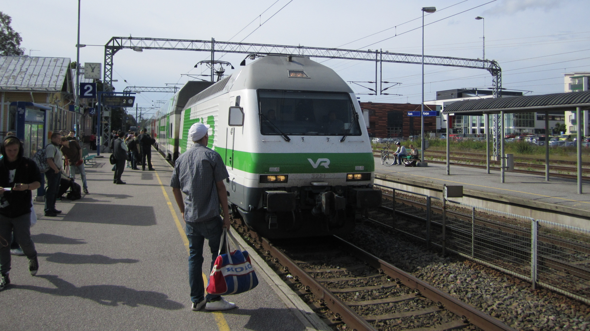

| west |
east |
index |
A61 |
Broad-gauge railway in black!
Above an overview map.
Below a map of this railway.
After changing to normal gauge at Esbo, the railway continues to Jorvas. At Jorvas trains destined to Tallinn continues south but trains destined to Stockholm continues towards Karis.
From an Estonian perspective it is possible to run a train from Tallinn to Jorvas and by only changing direction towards west, continue to Karis and to Stockholm Sweden. The question is should you use Rail Baltica or these connections. Somewhere between Berlin and Hamburg these connections will be faster and shorter than Rail Baltica. But the price of the ticket is a big "IF". A train from Stockholm towards Tallinn can also use the shortcut at Porkkala penninsula (Express to Reval) and donnot need to change direction.

at Karis station